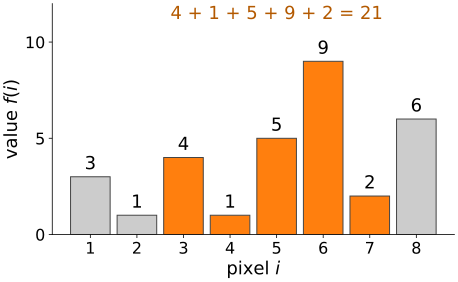
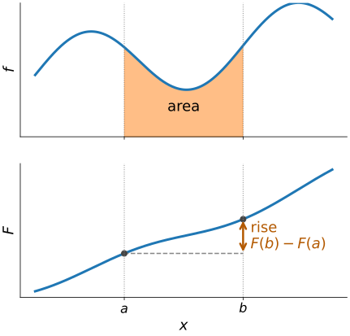
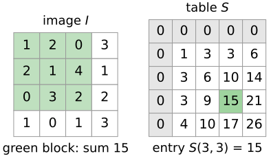
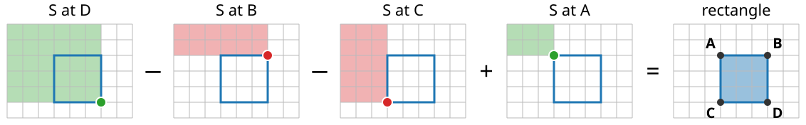
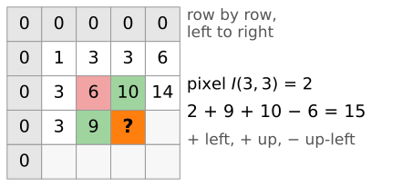
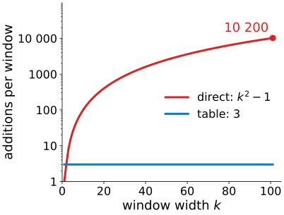
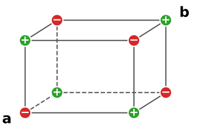

Many image analysis methods need the sum of the pixels in a rectangle, millions of times: a blur, a local mean, a feature for a detector. Adding the pixels up each time costs as much as the rectangle is large.
Write down a running total once; then any range sum is one subtraction.
In 2D: the integral image (summed-area table) gives the sum over any rectangle from four lookups, whatever its size.
It is built in one pass over the image.
It is the fundamental theorem of calculus, made discrete.
Slides titled The math give the formulas and proofs; the ideas are complete without them.
Sum of pixels 3 to 7? 4 + 1 + 5 + 9 + 2 = 21: 4 additions.
Pixels 2 to 5? 3 more additions. Pixels 1 to 8? 7 more.
A blur, a local mean or a detector asks this question at every pixel, for windows of 10, 50, 100 pixels. Adding up each time costs the length of the range, every time.
Can we pay once, and then answer every question at the same small cost?

The running total
Write down the running total (prefix sum) S(i) = sum of pixels 1, \dots, i, with S(0) = 0:
i
0
1
2
3
4
5
6
7
8
pixel f(i)
3
1
4
1
5
9
2
6
S(i)
0
3
4
8
9
14
23
25
31
Each entry is the one before plus one pixel: one addition per entry.
Sum of pixels a to b: everything up to b, minus everything before a: f(a) + \dots + f(b) = S(b) - S(a-1)
Pixels 3 to 7: S(7) - S(2) = 25 - 4 = 21. One subtraction, whatever the length.
Try it: range sums from a running total
The same picture in calculus
The running total of a curve is its antiderivative: F(x) = area under f from the start up to x.
The area between a and b is the rise of F: F(b) - F(a).
For pixels, the “curve” is a row of bars and the antiderivative a staircase: the same rule, with sums instead of integrals.
Differencing undoes summing: S(i) - S(i-1) = f(i), as the derivative of F gives back f.
So the running total is a pre-computed integral. Hence the name: integral image.

The math: from \int to \sum
Fundamental theorem of calculus: with F(x) = \int_0^x f(t)\,dt, \int_a^b f(t)\,dt = F(b) - F(a), \qquad F' = f.
The backward difference \Delta S(i) = S(i) - S(i-1) plays the role of the derivative: it undoes the summation exactly, with no approximation.
In 2D: the integral image
S(x, y) = sum of all pixels above and to the left of (x, y), including it: S(x, y) = \sum_{x' \le x}\ \sum_{y' \le y} I(x', y')
Pixels are numbered 1, \dots, N; the table gets an extra zero row and zero column (index 0).
With the zero row and column, the formulas below need no special cases at the border. We use this convention everywhere (demos, exercises).
The last entry, S(N, M), is the sum of the whole image.

Any rectangle from four corners

For the rectangle with corners A (above-left, outside), B, C, D (its bottom-right pixel): \text{sum} = S(D) - S(B) - S(C) + S(A)
S(D) covers too much. Remove the strip above (S(B)) and the strip to the left (S(C)): the block above-left of A has now been removed twice, so add it back once.
Building the table in one pass
Go through the image row by row, left to right. Each entry from three entries already filled, plus the pixel: S(x, y) = I(x, y) + S(x-1, y) + S(x, y-1) - S(x-1, y-1)
The same four-corner picture: left block + upper block, the overlap counted twice, so subtract it once.
Or in two 1D passes: running totals along every row, then running totals of the result down every column.
The raster fill is the same picture as the cost table of the dynamic-programming day, with a sum instead of a minimum.

Try it: fill the table, sum a rectangle
The math: the corner formula
In the continuous case, with \Phi(x, y) = \int_0^x\!\int_0^y f: \iint_{[a,b]\times[c,d]} f = \Phi(b, d) - \Phi(a, d) - \Phi(b, c) + \Phi(a, c) (inclusion–exclusion of four quadrants).
Proof: write S(x, y) = \sum_{x' \le x}\sum_{y' \le y} I and count how often each pixel is included: inside the rectangle 1 - 0 - 0 + 0; left of it 1 - 1 - 0 + 0; above it 1 - 0 - 1 + 0; above-left 1 - 1 - 1 + 1; all others 0. The recursion is the special case of a single pixel; the mixed difference \Delta_x\Delta_y S = I undoes the double sum, as \partial^2\Phi/\partial x\,\partial y = f.
What it costs
Building: one pass, about 3 additions per pixel.
Each rectangle sum: 4 lookups, 3 additions, whatever its size.
A 101 \times 101 window: directly 101^2 - 1 = 10\,200 additions; with the table 3.
A window at every pixel of a 1000 \times 1000 image: 10^6 \times 10\,200 \approx 10^{10} additions directly, 3 \times 10^6 + 3\times 10^6 with the table.
For a 3 \times 3 window the saving is small (8 additions against 3, plus building): the table pays off for large windows, and when many different windows are needed.
The price: one extra image of wider numbers. The last entry is the sum of the whole image; the next unit works out how many bits that needs.

The math: d dimensions
For a box in d dimensions with lower corner \mathbf a (just outside) and upper corner \mathbf b, sum over the 2^d corners \mathbf c with c_k \in \{a_k, b_k\}: \sum_{\text{box}} I = \sum_{\mathbf c} (-1)^{\,d - \#\{k:\, c_k = b_k\}}\, S(\mathbf c)
1D: 2 corners, S(b) - S(a). 2D: 4 corners. 3D (a volume, or a video as x, y, t): 8 corners.
Building: S(\mathbf x) = I(\mathbf x) - \sum over the other 2^d - 1 corners of the unit cube behind \mathbf x with signs (-1)^{\#\text{shifted}}; or d passes of 1D running totals, one per axis.

Where it is used
Box filters of any size at constant cost, and local mean and variance: the next unit. The same two maps give local thresholds (Niblack, Sauvola) on the thresholding day.
Rectangle features (Haar-like features) at any size: the unit after.
The Viola–Jones detector, which made real-time face detection possible in 2001.
Computer graphics: summed-area tables were introduced (Crow, 1984) to average a texture over a pixel’s footprint.
Summary
The running totalS turns any range sum into one subtraction: S(b) - S(a-1). It is the discrete antiderivative.
The integral imageS(x, y) = sum of everything above and to the left, padded with a zero row and column.
Any rectangle: S(D) - S(B) - S(C) + S(A): four lookups, whatever the size.
Built in one pass: S(x,y) = I + S(\text{left}) + S(\text{up}) - S(\text{up-left}).
Pays off for large windows and many windows; the price is one table of wider numbers.